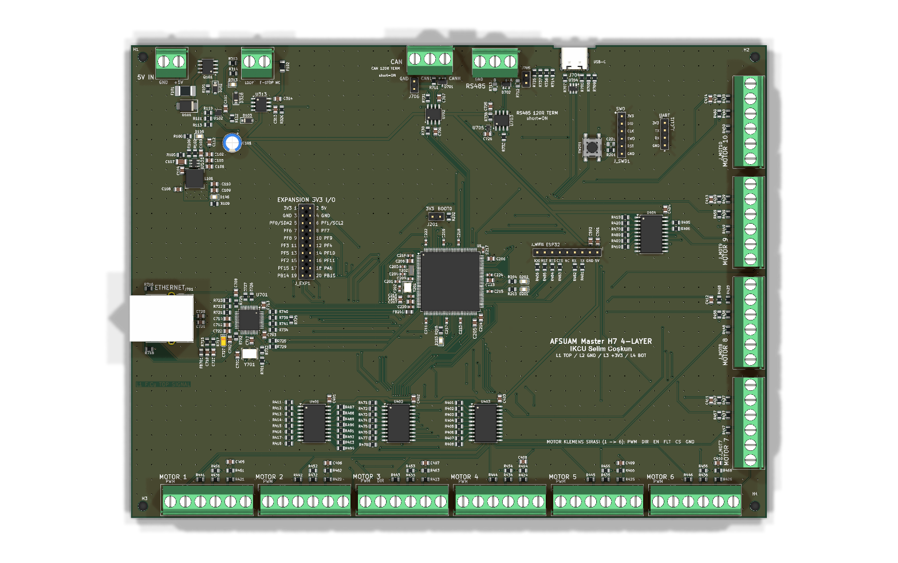
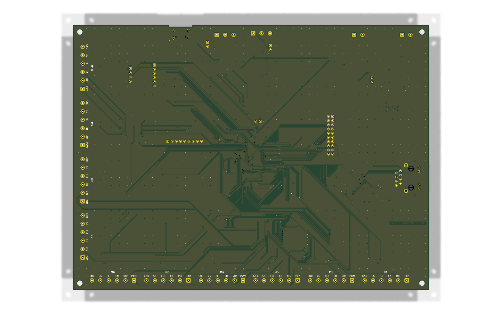

Hardware and the code that runs on it.
Small, well-scoped milestones with written updates and deliverables you can test.
STM32 Firmware
Bare-metal or HAL drivers for SPI, I²C, UART, DMA, ADC, timers, CAN and Ethernet. New-board bring-up and HardFault / DMA / cache debugging on F4, F7 and H7.
PCB Design in KiCad
Schematic capture, 2–4 layer layout, power and ground planning, DRC/ERC-clean output, Gerber/BOM/CPL ready for JLCPCB or PCBWay. Reviews of existing boards.
UAV & Flight Control
Sensor drivers, attitude estimation, control loops, MAVLink telemetry and software-in-the-loop testing with Gazebo and JSBSim.
Hardware Tools
Desktop and PC-side tools for your hardware in Rust or Python: serial/MAVLink monitors, field-device simulators, test consoles and dashboards.
Selected Work
SIG · GND · 3V3 · SIG


AFSUAM Master H7 — Industrial Master Controller
A PLC-replacement master board for a production line: it drives up to 10 motor channels, reads a UHF RFID reader over Ethernet and coordinates ESP32 slave nodes and an energy meter.
- STM32H743ZIT6 (Cortex-M7, LQFP-144) on a 4-layer stack-up with solid GND and 3V3 planes.
- 10/100 Ethernet (DP83848I), CAN, RS-485 with switchable 120 Ω termination, USB-C, ESP32 Wi-Fi link.
- Hardware E-stop loop and PTC-protected input; 8 functional schematic sheets.
- DRC and ERC at zero; connector footprints checked against manufacturer drawings; Gerber, BOM and pick-and-place generated.
Bare-Metal Firmware for the Master Board
Phase-1 firmware for the board above, written directly against CMSIS registers — no HAL — with a layered safety state machine around every motor output.
- 480 MHz clock tree from a 25 MHz crystal, SysTick and DWT timing, independent watchdog.
- 10-channel PWM with ramps across TIM1/TIM8/TIM4; 16-bit current sampling with per-second feature extraction.
- Modbus RTU master over RS-485, FDCAN, Ethernet PHY management and a serial test console.
- A Python RS-485 field-unit simulator (normal, jam, bearing-fault and frozen-heartbeat modes) to test without hardware.
Fixed-Wing UAV Flight Controller
Custom autopilot firmware in C for a fixed-wing competition aircraft — sensor drivers to autonomous landing — validated in simulation before it ever touches the airframe.
- Drivers for IMU, barometer, GPS and airspeed; attitude estimation (AHRS).
- Cascaded speed, altitude and attitude control; autonomous takeoff, mission, landing and target-dive modes.
- Software-in-the-loop rig: Gazebo and JSBSim in lockstep with the real control code.
- Ported to the team’s STM32H755 avionics board; MAVLink telemetry and onboard flash logging.
RFID Reader Client over Raw Ethernet
An STM32F407 that talks to industrial UHF RFID readers using LLRP, with a WIZnet W5500 Ethernet chip driven at register level — no HAL, no RTOS, no TCP/IP stack.
- W5500 driver written from the datasheet: network registers, TCP client socket, TX/RX buffer pointers and PHY link check.
- Socket state machine with automatic reconnect and a fresh source port on every attempt.
- LLRP setup sequence (DELETE / ADD / ENABLE / START_ROSPEC) and KEEPALIVE handling to hold the session open.
- Bounds-checked RO_ACCESS_REPORT parser that extracts EPC-96, antenna ID and peak RSSI for every tag.
Closed-Loop DC Motor Speed Control
Register-level speed control for a DC motor: optical encoder in, a tuned PI loop in the SysTick interrupt, PWM out — with the setpoint adjustable live over UART.
- PI controller (Kp 0.897, Ki 0.39) tuned for under 3 s settling, with integral clamping against wind-up.
- Speed from an LM393 slot sensor on EXTI1; a slew-rate limit and EMA filter clean up the 4-slot measurement.
- 1 kHz PWM on TIM4 driving an L298N, with the output clamped to 0–1000.
- Live setpoint commands and per-cycle telemetry over interrupt-driven UART.
What I work with.
More register-level firmware, in public.
6 more STM32 projects written against CMSIS only — no HAL — each with a README that explains the design.
Predictable steps, testable results.
Scope
A short call or written brief: requirements, constraints, what “done” means and how we will test it.
Design
Schematic or firmware architecture first, shared for review before layout or code goes deep.
Build & Verify
Layout with DRC/ERC, or code with unit tests and simulation; results documented, not just claimed.
Hand-off
Fabrication files or clean, commented source with a README — everything you need to take it further.
Engineer who likes the whole stack.
I enjoy the moment a board I laid out boots the firmware I wrote. Most of my work sits where hardware meets software: picking the MCU and the PHY, routing the planes, then writing the drivers and control loops that make it all useful.
I communicate in written English and Turkish, and I’m available for freelance and part-time remote work now — full-time after graduation.
Have a board or firmware to build?
Tell me what you are making. I’ll reply with questions, a plan and a first milestone.